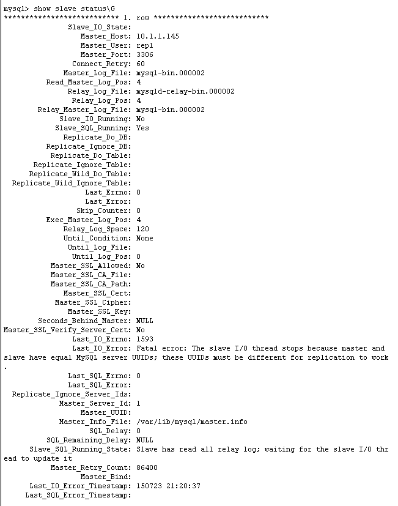
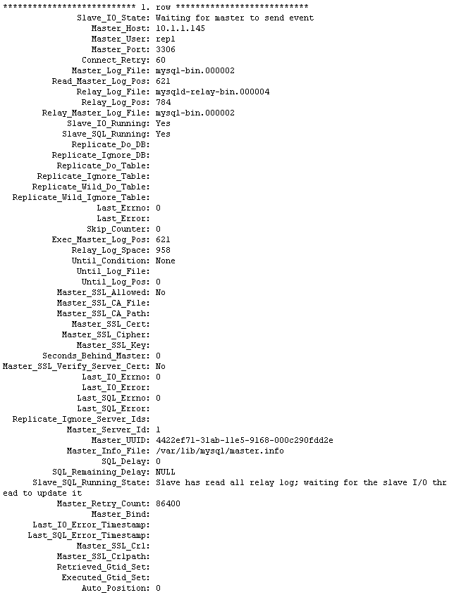

配置主节点
配置日志和服务ID , Linux是在/etc/my.cnf window是在my.ini文件下
1 | [mysqld] |
备注
如果您省略了服务器标识（或将其设置为其默认值为0），则该主拒绝来自于奴隶的任何连接。
配置从节点
1 | [mysqld] |
为复制创建用户
1 | mysql> CREATE USER 'repl'@'%' IDENTIFIED BY 'slavepass'; |
获取二进制日志文件路径
1 | mysql> FLUSH TABLES WITH READ LOCK; |
在主的不同的会话中，使用显示主状态语句来确定当前二进制日志文件名和位置：1
2
3
4
5
6mysql > SHOW MASTER STATUS;
+---------------+----------+--------------+------------------+
| File | Position | Binlog_Do_DB | Binlog_Ignore_DB |
+---------------+----------+--------------+------------------+
| mysql-bin.000003 | 73 | test | manual,mysql |
+------------------+----------+--------------+---------------+
该文件列显示的日志文件名和位置显示该文件中的位置。在这个例子中，二进制日志文件mysql-bin.000003和位置73。记录这些值。当你在建立奴隶的时候，你需要他们。他们代表的复制坐标，在该坐标的奴隶应该开始处理新的更新，从主。如果主已经运行以前没有二进制启用日志记录，日志文件的名称和位置值以显示主人的地位或就显示——主数据将是空的。在这种情况下，在指定从属的日志文件和位置是空字符串（“”）和4。
使用mysqldump创建数据快照(可选)
这里显示的例子将所有数据库文件命名为dbdump.db，包括——主数据选项，自动将改变主人要求奴隶开始复制过程的声明：1
shell> mysqldump --all-databases --master-data > dbdump.db
使用原数据创建数据快照（可选）
1.获取二进制日志文件路径参照第四步
2.关闭主服务1
shell> mysqladmin shutdown
3.复制数据库文件下面的命令只需要选择一个1
2
3shell> tar cf /tmp/db.tar ./data
shell> zip -r /tmp/db.zip ./data
shell> rsync --recursive ./data /tmp/dbdata
4.重启主节点服务
如果你不是使用的InnoDB 表没有mysqladmin shutdown这个步骤
在从节点中设置主配置
要建立与复制的主通信的从属关系，您必须告诉从属连接信息。要做到这一点，执行下面的语句，对从系统的实际值替换选项值：1
2
3
4
5
6mysql> CHANGE MASTER TO
-> MASTER_HOST='master_host_name',
-> MASTER_USER='replication_user_name',
-> MASTER_PASSWORD='replication_password',
-> MASTER_LOG_FILE='recorded_log_file_name',
-> MASTER_LOG_POS=recorded_log_position;
其中MASTER_LOG_FILE 对应的是Master 的日志文件名称，获取方法参考第四步。在我们这里是mysql-bin.000003
查看从节点运行状态1
mysql> show slave status\G;

MySQL Replication中Slave机器中有两个关键进程，死一个都不行，一个是Slave_SQL_Runing 一个是Slave_IO_Runing他们一个是负责自己的Slave MySQL进程，一个负责组建的IO通信。
看到 Slave_IO_Runing为NO表示从节点服务没有启动成功，然后我们看Last_IO_Error 显示的错误信息
Fatal error: The slave I/O thread stops because master and slave have equal MySQL server UUIDs; these UUIDs must be different for replication to work
从错误信息中可以看出从节点的UUID和UUID相同，造成出现这个错误有两种原因
第一：/etc/my.cnf文件中的server_id 相同我们可以通过1
mysql> show variables like ‘server_id';
如果相同修改重启mysql服务。
第二：如果不同查看主从server-uuid是否相同如果相同按照16进制规则修改其中任意库重启mysql服务即可。
找出这样的原因主要是因为直接copy mysql文件造成1
shell> cat /var/lib/mysql/auto.cnf;

现在 Slave_IO_Runing和Slave_SQL_Running都为YES启动成功
启动slave开始复制1
mysql> start slave;